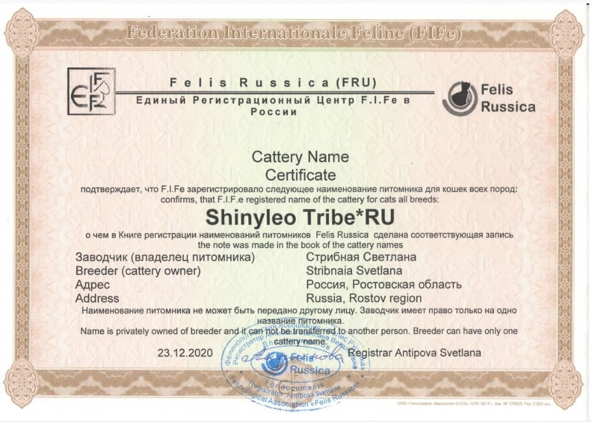

Über uns
Willkommen bei der Maine-Coon-Zuchtstätte ShinyLeo Tribe. Unsere Zuchtstätte befindet sich in Bataysk (Region Rostow). Mein Name ist Svetlana Stribnaya, und ich bin die Inhaberin dieser Zuchtstätte.
Unsere Zuchtstätte ist Teil unserer Familie. Alle Maine-Coons leben bei uns zu Hause, umgeben von Fürsorge, Aufmerksamkeit und Liebe. Wir legen besonderen Wert auf die Gesundheit und Sozialisierung unserer Kätzchen sowie auf ihre Einhaltung der Rassestandards.
Maine-Coons sind bemerkenswerte Katzen mit einem sanften Temperament, freundlichem Wesen und ausgezeichneter Verträglichkeit mit Kindern und anderen Haustieren. Ihr liebevolles „Singen“ und ihr majestätisches Aussehen machen sie zu wahren Schätzen in jedem Zuhause.
Zertifikat zur Eröffnung der Zuchtstätte
Unsere Zuchtstätte ist seit 2020 offiziell registriert.
Ausstellungsteilnahme

Unsere Maine-Coons nehmen regelmäßig an Ausstellungen teil und gewinnen Preise, die ihre hohe Qualität und die Einhaltung der Rassestandards bestätigen. Wir bereiten uns mit Liebe auf jede Veranstaltung vor und sind stolz auf die Erfolge unserer Tiere.